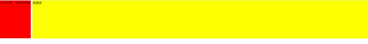
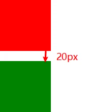
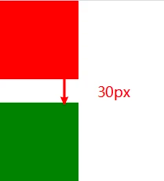
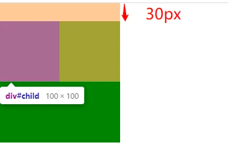
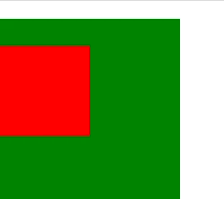
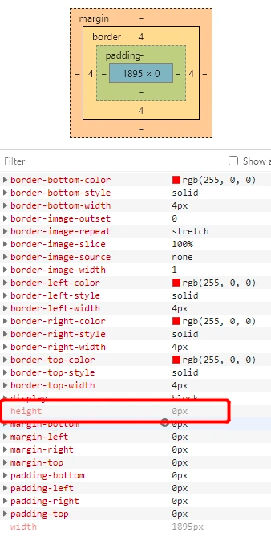
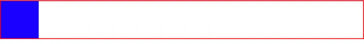

怎么触发BFC，BFC有什么应用场景？
参考答案
文档流
在介绍BFC之前，需要先给大家介绍一下文档流。
我们常说的文档流其实分为定位流、浮动流、普通流三种。
绝对定位(Absolute positioning)
如果元素的属性 position 为 absolute 或 fixed，它就是一个绝对定位元素。
在绝对定位布局中，元素会整体脱离普通流，因此绝对定位元素不会对其兄弟元素造成影响，而元素具体的位置由绝对定位的坐标决定。
它的定位相对于它的包含块，相关CSS属性：top、bottom、left、right；
对于 position: absolute，元素定位将相对于上级元素中最近的一个relative、fixed、absolute，如果没有则相对于html；
对于 position:fixed，正常来说是相对于浏览器窗口定位的，但是当元素祖先的 transform 属性非 none 时，会相对于该祖先进行定位。
浮动 (float)
在浮动布局中，元素首先按照普通流的位置出现，然后根据浮动的方向尽可能的向左边或右边偏移，其效果与印刷排版中的文本环绕相似。
普通流 (normal flow)
普通流其实就是指BFC中的FC。FC(Formatting Context)，直译过来是格式化上下文，它是页面中的一块渲染区域，有一套渲染规则，决定了其子元素如何布局，以及和其他元素之间的关系和作用。
在普通流中，元素按照其在 HTML 中的先后位置至上而下布局，在这个过程中，行内元素水平排列，直到当行被占满然后换行。块级元素则会被渲染为完整的一个新行。
除非另外指定，否则所有元素默认都是普通流定位，也可以说，普通流中元素的位置由该元素在 HTML 文档中的位置决定。
BFC 概念
先看下MDN上关于BFC的定义：
块格式化上下文（Block Formatting Context，BFC） 是Web页面的可视CSS渲染的一部分，是块盒子的布局过程发生的区域，也是浮动元素与其他元素交互的区域。
具有 BFC 特性的元素可以看作是隔离了的独立容器，容器里面的元素不会在布局上影响到外面的元素，并且 BFC 具有普通容器所没有的一些特性。
通俗一点来讲，可以把 BFC 理解为一个封闭的大箱子，箱子内部的元素无论如何翻江倒海，都不会影响到外部。
除了 BFC，还有：
IFC（行级格式化上下文）-inline内联GFC（网格布局格式化上下文）-display: gridFFC（自适应格式化上下文）-display: flex或display: inline-flex
注意：同一个元素不能同时存在于两个 BFC 中。
BFC的触发方式
MDN上对于BFC的触发条件写的很多，总结一下常见的触发方式有（只需要满足一个条件即可触发 BFC 的特性）：
- 根元素，即
<html> - 浮动元素：
float值为left、right overflow值不为visible，即为auto、scroll、hiddendisplay值为inline-block、table-cell、table-caption、table、inline-table、flex、inline-flex、grid、inline-grid- 绝对定位元素：
position值为absolute、fixed
BFC的特性
- BFC 是页面上的一个独立容器，容器里面的子元素不会影响外面的元素。
- BFC 内部的块级盒会在垂直方向上一个接一个排列
- 同一 BFC 下的相邻块级元素可能发生外边距折叠，创建新的 BFC 可以避免外边距折叠
- 每个元素的外边距盒（
margin box）的左边与包含块边框盒（border box）的左边相接触（从右向左的格式的话，则相反），即使存在浮动 - 浮动盒的区域不会和 BFC 重叠
- 计算 BFC 的高度时，浮动元素也会参与计算
应用
BFC是页面上的一个隔离的独立容器，容器里面的子元素不会影响到外面元素，反之亦然。我们可以利用BFC的这个特性来做很多事。
自适应两列布局
左列浮动（定宽或不定宽都可以），给右列开启 BFC。
<div>
<div class="left">浮动元素，无固定宽度</div>
<div class="right">自适应</div>
</div>* {
margin: 0;
padding: 0;
}
.left {
float: left;
height: 200px;
margin-right: 10px;
background-color: red;
}
.right {
overflow: hidden;
height: 200px;
background-color: yellow;
}效果：<br>

- 将左列设为左浮动，将自身高度塌陷，使得其它块级元素可以和它占据同一行的位置。
- 右列为 div 块级元素，利用其自身的流特性占满整行。
- 右列设置overflow: hidden,触发 BFC 特性，使其自身与左列的浮动元素隔离开，不占满整行。
这即是上面说的 BFC 的特性之一：浮动盒的区域不会和 BFC 重叠
防止外边距（margin）重叠
兄弟元素之间的外边距重叠
<div>
<div class="child1"></div>
<div class="child2"></div>
</div>* {
margin: 0;
padding: 0;
}
.child1 {
width: 100px;
height: 100px;
margin-bottom: 10px;
background-color: red;
}
.child2 {
width: 100px;
height: 100px;
margin-top: 20px;
background-color: green;
}效果：<br>

两个块级元素，红色 div 距离底部 10px，绿色 div 距离顶部 20px，按道理应该两个块级元素相距 30px 才对，但实际却是取距离较大的一个，即 20px。
块级元素的上外边距和下外边距有时会合并（或折叠）为一个外边距，其大小取其中的较大者，这种行为称为外边距折叠（重叠），注意这个是发生在属于同一 BFC 下的块级元素之间
根据 BFC 特性，创建一个新的 BFC 就不会发生 margin 折叠了。比如我们在他们两个 div 外层再包裹一层容器，加属性 overflow: hidden，触发 BFC，那么两个 div 就不属于同个 BFC 了。
<div>
<div class="parent">
<div class="child1"></div>
</div>
<div class="parent">
<div class="child2"></div>
</div>
</div>.parent {
overflow: hidden;
}
/* ... */
这个关于兄弟元素外边距叠加的问题，除了触发 BFC 也有其他方案，比如你统一只用上边距或下边距，就不会有上面的问题。
父子元素的外边距重叠
这种情况存在父元素与其第一个或最后一个子元素之间（嵌套元素）。
如果在父元素与其第一个/最后一个子元素之间不存在边框、内边距、行内内容，也没有创建块格式化上下文、或者清除浮动将两者的外边距 分开，此时子元素的外边距会“溢出”到父元素的外面。
<div id="parent">
<div id="child"></div>
</div>* {
margin: 0;
padding: 0;
}
#parent {
width: 200px;
height: 200px;
background-color: green;
margin-top: 20px;
}
#child {
width: 100px;
height: 100px;
background-color: red;
margin-top: 30px;
}
如上图，红色的 div 在绿色的 div 内部，且设置了 margin-top 为 30px，但我们发现红色 div 的顶部与绿色 div 顶部重合，并没有距离顶部 30px，而是溢出到父元素的外面计算。即本来父元素距离顶部只有 20px，被子元素溢出影响，外边距重叠，取较大的值，则距离顶部 30px。
解决办法：
- 给父元素触发 BFC（如添加overflow: hidden）
- 给父元素添加 border
- 给父元素添加 padding
这样就能实现我们期望的效果了：<br>

清除浮动解决令父元素高度坍塌的问题
当容器内子元素设置浮动时，脱离了文档流，容器中总父元素高度只有边框部分高度。
<div class="parent">
<div class="child"></div>
</div>* {
margin: 0;
padding: 0;
}
.parent {
border: 4px solid red;
}
.child {
float: left;
width: 200px;
height: 200px;
background-color: blue;
}
解决办法：给父元素触发 BFC，使其有 BFC 特性：计算 BFC 的高度时，浮动元素也会参与计算
.parent {
overflow: hidden;
border: 4px solid red;
}
上面我们都是用的 overflow: hidden 触发 BFC，因为确实常用，但是触发 BFC 也不止是只有这一种方法。
如上面写的所示，可以设置float: left;，float: right;，display: inline-block;，overflow: auto;，display: flex;，display: table;，position 为 absolute 或 fixed 等等，这些都可以触发，不过父元素宽度表现不一定相同，但父元素高度都被撑出来了。
当然实际运用可不是随便挑一个走，还是根据场景选择。
BFC（Block Formatting Context）是 CSS 中的一个概念，它定义了元素如何与其它元素相互作用，尤其是在布局和定位方面。触发 BFC 的常见方式包括：
- 浮动元素：
float属性不为none的元素。 - 绝对定位元素：
position属性为absolute或fixed。 inline-block元素：display属性为inline-block。table-cell,table-caption元素：display属性为table-cell或table-caption。overflow不为visible的块级元素：overflow属性为hidden、auto或scroll。
BFC 的应用场景
- 防止外边距折叠：
- 当两个垂直方向的块级元素的外边距相遇时，会发生外边距折叠。通过创建 BFC 可以防止这种情况。
- 自适应多栏布局：
- 利用 BFC 可以创建多栏布局，每栏内容自适应容器宽度。
- 防止元素被浮动元素覆盖：
- 通过创建 BFC，可以确保块级元素不会被浮动元素覆盖。
- 创建独立的布局容器：
- 将一个区域与页面上的其他部分隔离，实现独立的布局控制。
- 实现清除浮动：
- 清除浮动元素的影响，确保后续元素的布局不受影响。
考察重点
- 理解：BFC 的概念及其触发方式。
- 应用：能够根据实际需求利用 BFC 解决布局问题。